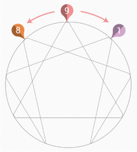

Enneagram Wings
The Enneagram wings are the enneatypes located on both sides of your
Enneagram type. If you’re a type 9, for example, your Enneagram wings
would be type 8 and 1.

Our Wings are other types that have lots in common with our own type, as
they are directly related. They can enhance or diminish our Type traits
according to their own traits.
An Enneagram with its wings is
a complete description that illustrates how complex we are. By
understanding how wings work we learn to enhance or diminish specific
traits in order to reach our healthiest version.
We’re not
locked into one archetype, we have things in common with our wings and
the better we know them the deeper we’ll know ourselves and our
contradictions.
The Difference Between Your Core Type And Your (Dominant) Wing
The core type is your Enneagram type. The one that sets the
pattern and defines how you relate with the environment and build your
relationships. At the same time, you also have a dominant wing, which
is one of the two enneatypes located at your core type sides. One of
them has more influence than the other. We could say that the dominant
wing is a second artist that offers a final touch to the original
work.
Both core type and dominant wing interact with each
other by creating new shapes.
This interaction is not free of
tension and contradictions. They actually coexist in a rather wild way
until we take the test and identify them. Once we’re ready to separate
the core type from the dominant wing, we get to the source of our
life.
Acknowledging this allows us to get to know our
mechanisms and use them to evolve and feel well. Self-knowledge is the
most powerful thing. By knowing your Enneagram type and wings, you’ll
change your mindset to be more truthful to your real self, your
essence. You will then prosper!
12
Enneagram 1: Wings